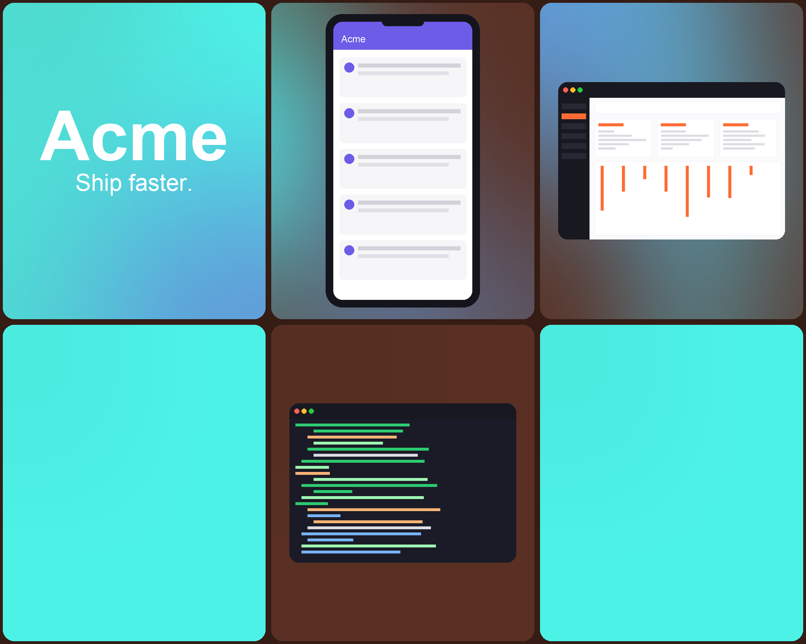
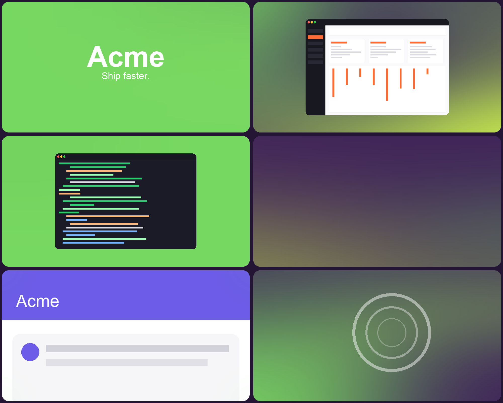
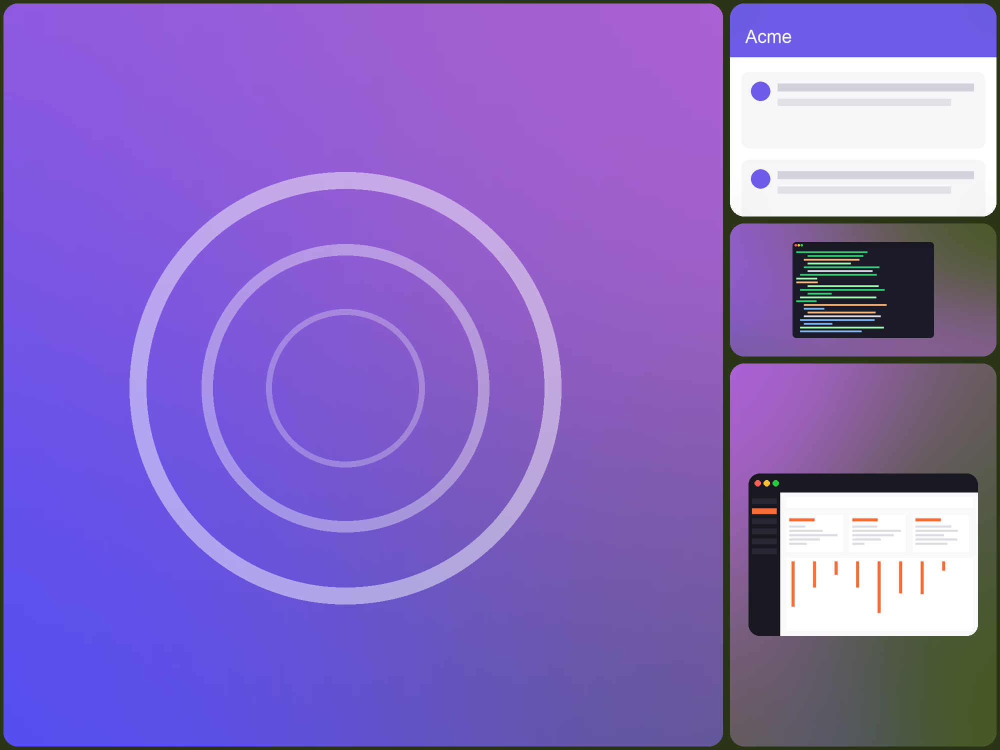
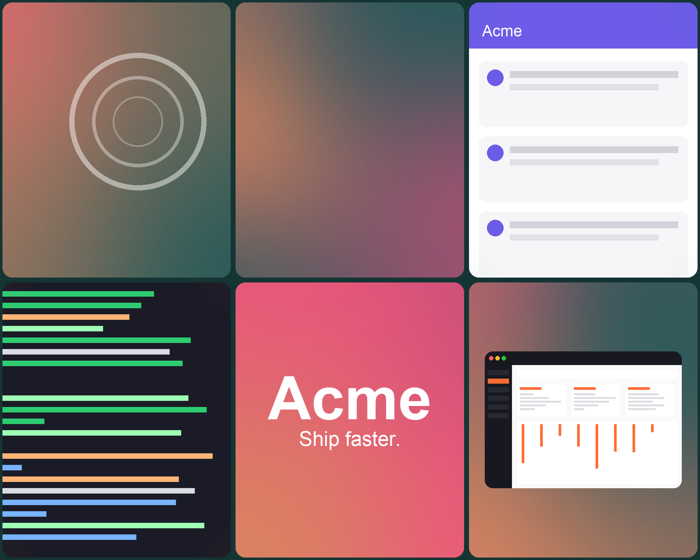
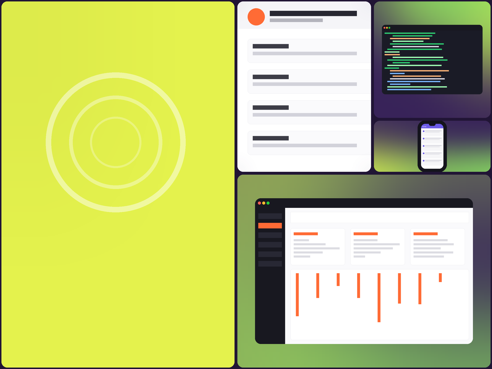
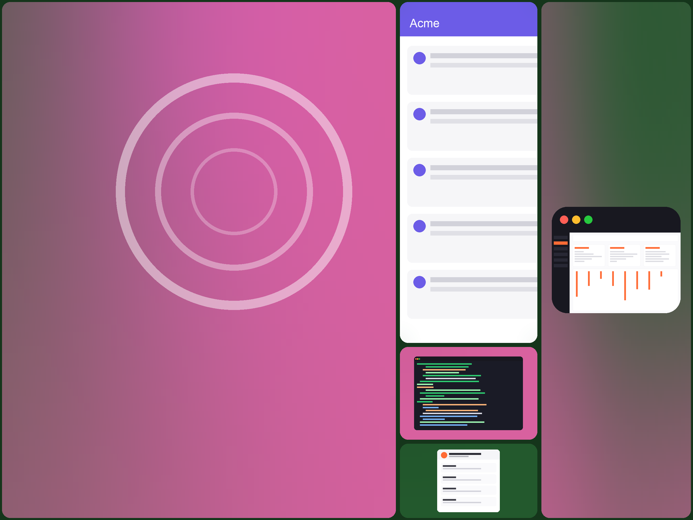
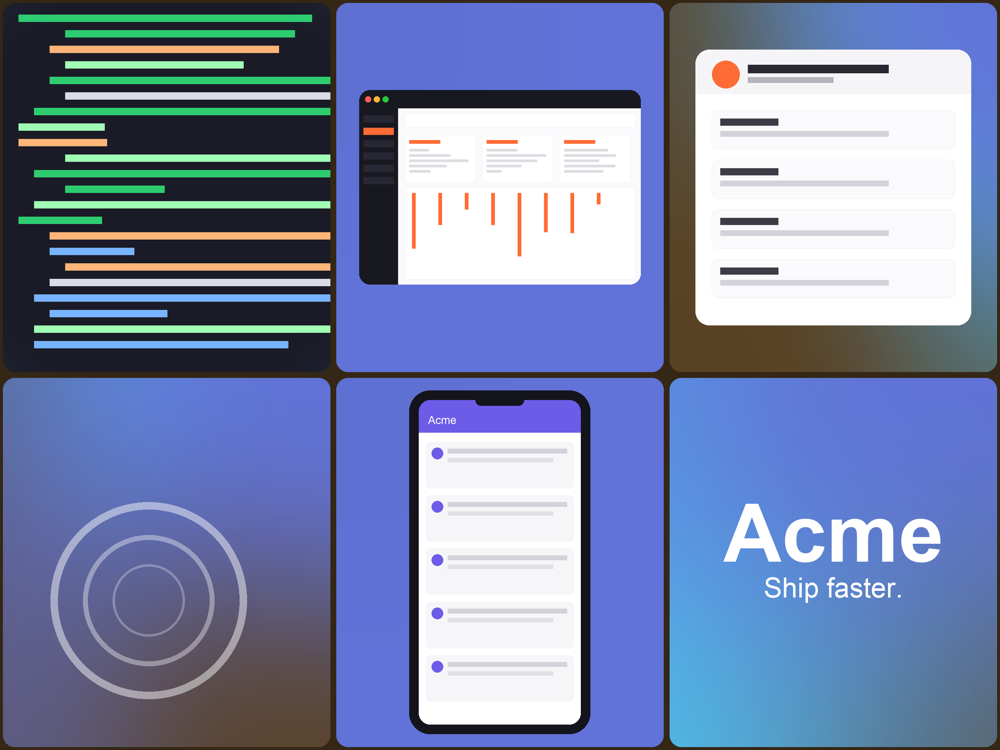

A free Claude skill by Alan Weibel
Screen showcase.
Hand Claude a handful of app or product screenshots and it composes them into one branded showcase image, the way Lovable, Linear or Stripe lay out their screens, instead of a flat stack of plain white UI.
- 95%
- of 20 varied test phrasings correctly started or correctly stayed out of the way
- 0%
- false triggers on near-miss requests, like cropping one image or asking for a chart
- 4
- layouts: an even horizontal or vertical grid, auto-picked, or an irregular bento layout
- 1
- dependency. It's a Python script using Pillow, nothing uploaded anywhere
Overview
Stacking a few screenshots on top of each other, or dropping them into a plain equal grid, reads as unfinished. Marketing pages never do that: they vary panel size, mix in pure color panels, and pull every screen into one palette. This skill does that automatically from screenshots you already have.
It works in three parts.
- It picks a layout. An even grid of equal boxes (3x2 or 2x3, auto-oriented to the canvas, or forced either way), or an irregular "bento" layout where a randomized cut gives one dominant panel and several smaller ones, reshuffled on every run.
- It treats each screenshot differently. Some get cropped full-bleed to fill their panel, with the crop point chosen by scoring a few golden-ratio-spaced candidates rather than cutting dead-center. Others get shown whole, framed in a lightweight browser-chrome bar or phone bezel picked from their aspect ratio.
- It ties the whole thing together. It pulls an accent palette out of the screenshots themselves (the saturated bits, not the white chrome), uses it for a handful of pure gradient or solid color panels, and washes a touch of it into the screenshot edges so nothing looks like it belongs to a different image.
It's a script, not a generative image model: every pixel in the output is a real crop or scale of a screenshot you gave it, or a generated gradient/solid panel. Nothing is invented or sent anywhere.
Download
Install
- Claude Code
- Unzip it into your skills folder and it will be available in every project.
You can also unzip it into a single project'sunzip screen-showcase.skill -d ~/.claude/skills/.claude/skills/folder. - Claude apps
- If your plan supports custom skills, upload
screen-showcase.skillin the skills settings.
Use
No special command needed. Hand Claude 3 to 8 screenshots and ask for a hero image, a marketing grid, a README header, a portfolio or case-study showcase, or "something like Linear/Stripe/Lovable's homepage," and it will run the script for you. You can also type /screen-showcase, or run the script directly:
python3 ~/.claude/skills/screen-showcase/scripts/compose_grid.py shot1.png shot2.png shot3.png shot4.png -o showcase.pngExamples
These four are real, unedited output from the script, run against placeholder app screens (a dashboard, a mobile list, a code editor, a settings card) so no real product's screenshots are needed to show the idea.




Docs
Flags
| Flag | What it does |
|---|---|
--layout | auto (default), horizontal, vertical, or bento |
--panels | Total panel count. 6 by default for the grid layouts; auto (3-8) for bento |
--grid-cols / --grid-rows | Force an exact grid shape instead of the layout presets |
--width / --height | Output canvas size in px (default 2400x1800) |
--logo-text / --tagline | Drawn on the hero panel; omit both for an abstract gradient instead |
--colors | Comma-separated hex colors to force instead of auto-extracting a palette |
--brand-panels | How many non-screenshot panels to include |
--solid-bias | 0-1 chance a panel renders as flat solid color instead of gradient |
--seed | Fix the random layout/gradients for a reproducible result; omit for a fresh one each run |
--gap / --radius | Gutter width and panel corner radius, in px |
How it behaves
- It doesn't center-crop by default. A smart-crop pass scores a few golden-ratio-spaced candidate offsets by edge density and picks the one that keeps the most visual content, rather than always cutting from the middle.
- It extracts its own palette. It pulls saturated dominant colors out of the screenshots (a button, a logo mark, a chart color), filtering out the white and gray chrome every screenshot has. If nothing saturated is there, it falls back to a generated harmonious palette instead of guessing wrong.
- It picks a frame from the aspect ratio. Wide screenshots get a browser-chrome bar, narrow ones get a phone bezel, square-ish ones get a plain rounded card.
- Bento re-randomizes the shapes themselves, not just the colors. Every cut's axis, side and fraction is drawn fresh each run unless you pass
--seed. - Nothing leaves your machine. It's a local Pillow script; no screenshots are uploaded to any service.
Evals
Two things matter here: does it actually produce a good composed image when asked, and does Claude reach for it at the right moments. Both were tested for real, not estimated.
Does it produce a good composition?
Three fresh, independent Claude sessions were each given a plain-language request and the same four real screenshot files, with no hint that this was a test. These are their unedited, unretouched results.


--layout bento explicitly
| Check | eval1 | eval2 | eval3 |
|---|---|---|---|
Used the real compose_grid.py script (not hand-rolled code) | Yes | Yes | Yes |
| Output is a valid image at the requested size | Yes, 2400x1800 | Yes, 2400x1800 | Yes, 2400x1800 |
| All 4 provided screenshots appear in the result | Yes | Yes | Yes* |
*The eval3 session's first pass silently dropped one screenshot: with 4 screenshots and the default panel split, the grid didn't leave enough non-brand slots for all of them. It noticed and re-ran with an explicit flag to fit everything. That default has since been fixed in the script itself, so a plain request like this one no longer needs the workaround.
Does it start when it should?
A skill only helps if Claude actually uses it. Twenty realistic requests were run once each, in a real project, with the skill installed globally.
| Request | Expected | Started the skill |
|---|---|---|
| yo can you mash these 5 app screenshots into one of those fancy grid images like companies use on their homepage | Should start | Yes |
| I have screenshots at ~/Desktop/shots/ (dashboard.png, mobile.png, settings.png, billing.png, onboarding.png) and want a single hero banner for our relaunch page, something with color variety not just a plain grid of white screens | Should start | Yes |
| can you compose a branded showcase image from our product screens, kind of like what Linear or Stripe do on their site | Should start | Yes |
| need a bento-style collage of like 6 screenshots for the app store listing, mix of big and small panels | Should start | Yes |
| working on my portfolio case study and I want the project screenshots turned into one composed showcase graphic, not just stacked one after another | Should start | Yes |
| our repo's README just has 3 plain screenshots stacked, can you turn them into a nicer single header image with some color | Should start | Yes* |
| can u take my screeenshots and make like a marketing grid out of them, got 4 of em | Should start | Yes |
| need an app store feature graphic combining a few in-app screens with some gradient color panels mixed in, not just the screens alone | Should start | Yes |
| make a twitter/og image from these 5 product screenshots, want it branded not a boring contact sheet | Should start | Yes |
| I love how vercel.com's screenshots section looks, varied sizes and some color blocks mixed in, can you do that with my own screenshots | Should start | Yes |
| can you crop this screenshot down to just the header bar and save it as a png | Should not | No |
| I need a bar chart comparing Q3 signups across three regions, mind whipping one up | Should not | No |
| does the spacing in this dashboard screenshot feel off to you? take a look and critique the layout | Should not | No |
| resize logo.png to 512x512 for the app icon please | Should not | No |
| can you stitch these 10 scrolling screenshots of the same page into one long image so I can read the whole thread top to bottom | Should not | No |
| help me draft the case study writeup for this project, I'll share screenshots later once the text is solid | Should not | No |
| turn this Figma frame into actual React code for the settings page | Should not | No |
| can you remove the background from this product photo so it's transparent | Should not | No |
| just want these two screenshots side by side, old UI vs new UI, same size, no fancy branding or colors, quick internal slack post | Should not | No |
| sketch me a rough wireframe for a new settings screen based on this description, nothing exists yet | Should not | No |
19 of 20 correct on the first try; the one marked * triggered correctly on an immediate retry, so it reads as sampling noise rather than a gap in the description. 0 of the 10 "should not" requests started the skill.
Reference
What's in the package
SKILL.md | The main instructions: layout modes, palette extraction, screenshot treatments, flags |
scripts/compose_grid.py | The whole engine: layout, palette, crop, frame and render, in one Pillow script |
If you have questions or ideas, email me at alanweibel@gmail.com.